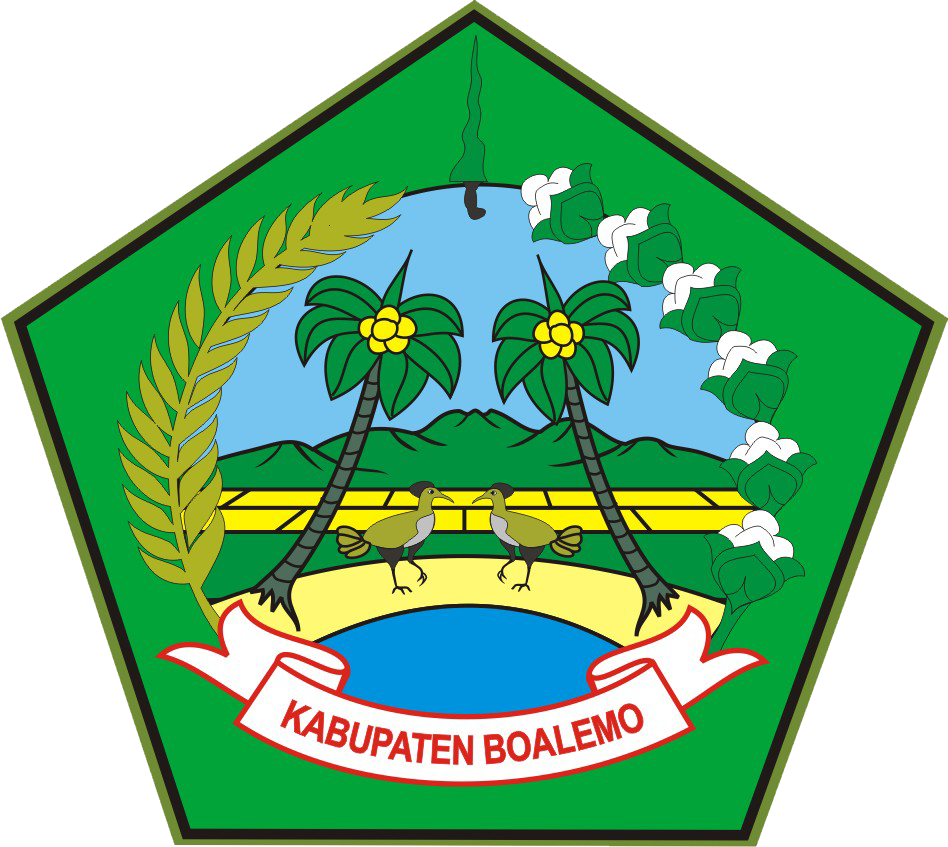

sumber By: WIKIPEDIA
Pembentukan daerah otonom di Indonesia sering kali dikaitkan dengan dua hal, yakni bagian dari daerah kerajaan masa lampau dan pembagian daerah menurut aturan kolonial Belanda. Berdasarkan data historis, Boalemo pada abad ke-17 pernah menjadi sebuah daerah kerajaan, wilayahnya mencakup bagian barat Gorontalo. Ketika Belanda berkuasa sistem pemerintahan beberapa kali mengalami perubahan. Dalam Lembaran Negara tahun 1925 Nomor 262, Keresidenan Gorontalo dibagi menjadi dua wilayah pemerintahan, yakni; 1) Onder Afdeling Gorontalo dengan Onder distriknya, meliputi Atinggola, Kwandang, Sumalata, Batudaa, Tibawa, Gorontalo, Telaga, Tapa, Kabila, Suwawa dan Bonepantai, 2) Onder Afdeling Boalemo dengan Onder distriknya, meliputi Paguyaman, Tilamuta dan Paguat.
Pada tahun 1946, ketika Sulawesi menjadi bagian dari Negara Indonesia Timur, keswaprajaan yang tertuang dalam Undang-Undang Nomor 29 Tahun 1959 perihal pemebentukan Daerah Tingkat II di seluruh Sulawesi. Dalam UU ini Boalemo menjadi salah satu kawedanan dalam wilayah Kabupaten Gorontalo. Status kewedanan Boalemo berlaku sampai dengan keluarnya Undang-Undang Nomor 5 tahun 1974 yang selanjutnya disusul oleh Permendagri Nomor 132 tahun 1978 tentang Pedoman Susunan Organisasi dan Tata Kerja Kantor Pembantu Bupati/Walikotamadya.
Kemudian bekas Kewedanan Boalemo berubah menjadi Pembantu Bupati Wilayah Kerja Paguat yang meliputi lima kecamatan, yakni ; Paguyaman, Tilamuta, Marisa, Popayato. Menengok sejarah Boalemo pada masa lalu, serta mempertimbangkan jarak kendali pemerintahan Kabupaten Gorontalo yang berpusat di Limboto, maka kemudian berkembang aspirasi pembentukan daerah otonom baru. Apalagi saat itu dukungan telah disuarakan oleh Bupati Gorontalo dan DPRD setempat, juga adanya dukungan dari Gubernur dan DPRD Sulawesi Utara sebelum berpisah Gorontalo menjadi provinsi. Kemudian Presiden RI dan DPR RI menetapkan Undang-Undang Nomor 50 Tahun 1999, tanggal 4 Oktober 1999 tentang Pembentukan Kabupaten Boalemo (Lembaran Negara RI tahun 1999 Nomor 178, Tambahan Lembaran Negara RI Nomor 3899).
Kemudian secara resmi Kabupaten Boalemo berdiri setelah diundangkannya pada tanggal 12 Oktober 1999. Pada saat berdiri Kabupaten Boalemo meliputi 5 wilayah kecamatan, yaitu; Kecamatan Paguat, Kecamatan Marisa, Kecamatan Popayato, Kecamatan Paguyaman, Kecamatan Tilamuta,. Melihat perkembangan dan dinamika masyarakat Boalemo yang terjadi, serta Provinsi Gorontalo telah terbentuk maka pada tahun 2003 Boalemo dimekarkan lagi. Pada tanggal 27 Januari 2003 Kabupaten Pohuwato berdiri, wilayah ini tadinya merupakan bagian dari Kabupaten Boalemo yang meliputi Lima kecamatan, yakni:
Pembentukan Kabupaten Pohuwato sekaligus mengakhiri polemik ditengah masyarakat Kabupaten Boalemo, sebab di dalam Pasal 7 Undang-Undang Nomor 50 tahun 1999 menyebutkan bahwa Kabupaten Boalemo dalam jangka waktu lima tahun harus memindahkan ibu kotanya dari Tilamuta ke Marisa.
Lambang Daerah Kabupaten Boalemo dimuat dalam bentuk segi Lima, yang melambangkan 5 (lima) Sila Pancasila. Lambang Daerah Kabupaten Boalemo memuat kondisi Geografis dan potensi alam Boalemo antara lain ;
Dan indentitas Hewan Langka di Kabupaten Boalemo yaitu Burung Maleo Lambang Daerah Kabupaten Boalemo memuat senjata khas masyarakat Boalemo yaitu keris (Bituo); Warna Dasar / Arsir Hijau yang merupakan warna adat (linula) Boalemo melambangkan kesejahteraan Masyarakat Boalemo; Atribut lambang Kabupaten Boalemo memuat symbol padi dan kapas yang melambangkan kesejahteraan Masyarakat Boalemo; Landasan bingkai lambang kabupaten Boalemo bertuliskan Kabupaten Boalemo; Ukuran lambang Kabupaten Boalemo disesuaikan dengan kabutuhan di mana lambang itu akan ditempatkan.
Pemaknaan Simbol Dalam Logo:
Pemaknaan Warna Dalam Logo: